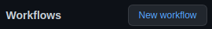

Plantillas de flujos de trabajo
En muchas ocasiones, los flujos de trabajo son muy similares en los repositorios de un mismo proyecto. Para reducir esfuerzos, ser más consistentes y organizados, GitHub Actions permite definir plantillas de flujos de trabajo que podemos copiar en nuestros repositorios muy fácilmente.
Al finalizar, sabrá:
-
Qué es una plantilla de flujo de trabajo.
-
Cómo se crean las plantillas de flujo de trabajo.
-
Cómo hacer una copia de una plantilla de flujo de trabajo en un repositorio destino.
Introducción
Una plantilla de flujo de trabajo (workflow template o starter workflow) es un archivo que se puede utilizar como punto de partida para crear rápida y fácilmente un flujo de trabajo. Por ejemplo, si tiene un proyecto con varios repositorios donde sus flujos de trabajo son similares o parecidos, puede crear una plantilla para generarlos fácil y rápidamente desde un repositorio centralizado. Es mejor hacerlo así que tener que buscar otro repositorio que tiene el flujo de trabajo similar a utilizar y, entonces, copiar y pegar. El proyecto Akromio dispone de varias plantillas que se utilizan a la hora de crear nuevos repositorios para el proyecto, https://github.com/akromio/.github/tree/master/.github/workflow-templates.
Ubicación de las plantillas de flujo de trabajo
Las plantillas de flujo de trabajo deben crearse en el repositorio público .github de la organización en el directorio .github/workflow-templates.
Archivos de plantilla de flujo de trabajo
Las plantillas requieren dos archivos: el de la propia plantilla y su archivo de propiedades.
Archivo plantilla
Por un lado, la plantilla requiere el archivo de flujo de trabajo que copiaremos cuando lo necesitemos, como cualquier otro archivo de flujo de trabajo. En este archivo, podemos utilizar la variable $default-branch para hacer referencia a la rama predeterminada del repositorio donde se creará, finalmente, el flujo. En tiempo de copia y pega, GitHub Actions cambiará su valor al de la rama predeterminada del repositorio donde añadiremos la copia de la plantilla como flujo de trabajo de facto. He aquí un ejemplo ilustrativo:
name: CI
on:
push:
branches:
- $default-branch
pull_request:
branches:
- $default-branch
jobs:
runTests:
uses: akromio/.github/.github/workflows/nodejs-ci.yaml@master
Archivo de propiedades
Por otra parte, tenemos el archivo de metadatos o propiedades de la plantilla. Tiene el mismo nombre que el archivo YAML, pero con la extensión .properties.json. Ejemplo:
{
"name": "CI Workflow (Node.js)",
"description": "Continuous integration workflow.",
"categories": ["node"],
"filePatterns": ["package.json$"]
}
Las propiedades del archivo son las siguientes:
| Propiedad | Descripción |
|---|---|
| name | Nombre con el que nos referiremos a la plantilla. |
| description | Breve descripción de la plantilla. |
| iconName | Ruta a un archivo SVG, sin la extensión, que se asociará a la plantilla. Debe encontrarse en el mismo directorio de plantillas workflow-templates. |
| categories | Lenguajes de los proyectos en los que se podrá utilizar como, por ejemplo, Go, node, Python o TypeScript. |
| filePatterns | Patrones de archivos que deben aparecer en el repositorio destino para poder copiarse en él. |
Uso de plantillas
Una vez está disponible la plantilla en el repositorio público .github, más concretamente, en su directorio .github/workflow-templates, podemos pasar a hacer una copia en cualquiera de nuestros repositorios. Para ello, tenemos que utilizar la interfaz web de GitHub. Debe quedar claro que vamos a escribir en un repositorio y, por lo tanto, tendremos que hacerlo mediante una confirmación (commit), por lo que al final del proceso nos solicitará el mensaje de confirmación a indicar.
Los pasos a seguir son los siguientes:
-
Ir al repositorio destino donde copiar la plantilla.
-
Ir a la pestaña Actions.
-
Hacer clic en New workflow:

-
Seleccionar la plantilla a copiar en el repositorio mediante Choose a workflow, observe que puede utilizar plantillas de otras organizaciones también.
Para que sus plantillas aparezcan, su cuenta debe ser de organización y no personal. En caso de estar ante una cuenta personal, podrá utilizar las plantillas de otras organizaciones siempre que recuerde que si está intentando copiar la plantilla a uno de sus repositorios privados, necesitará un plan de pago. Si es a un repositorio público, no debería tener problemas.
-
Hacer cualquier cambio extra necesario en la copia de la plantilla.
-
Hacer clic en Start commit para hacer la confirmación.
Recuerde que la variable $default-branch, que aparece en las plantillas, se sustituirá por la rama predeterminada del repositorio destino.
No hay que olvidar que las plantillas propias sólo se pueden copiar a un repositorio destino si la plantilla se encuentra en una cuenta de organización. En caso de no ser así, puede utilizar el siguiente script para hacerlo desde la línea de comandos:
#!/usr/bin/env bash
# GitHub owner name.
readonly owner=$1
# Owner branch to query.
readonly branch=master
# Workflow template file.
readonly templateFile=$2
# Default branch in the current repo.
readonly defaultBranch=$([[ -z "$3" ]] && echo "master" || echo "$3")
# Show the help of this script.
function showHelp() {
echo "$0 ownerName templateFile [targetDefaultBranch]"
echo
echo "Example: $0 theOwner go-ci.yaml master"
echo "Notes:"
echo " - The script must be run in the repo's root dir."
echo " - If target file already exists, the copy is cancelled."
echo " - If targetDefaultBranch unset, master used."
}
# (1) pre: show help?
if [[ "$1" == "-h" || "$1" == "--help" ]]; then
showHelp
exit
fi
if [[ $# != 2 && $# != 3 ]]; then
showHelp
exit 1
fi
# (2) pre: target file must not exist
readonly targetDir=.github/workflows
readonly targetFile=$targetDir/$templateFile
if [[ -f $targetFile ]]; then
echo "$targetFile already exists. Operation cancelled."
exit 1
fi
# (3) get template content
readonly url=https://raw.githubusercontent.com/$owner/.github/$branch/.github/workflow-templates/$templateFile
readonly templateContent=$(curl -s $url)
if [[ "$templateContent" == "404: Not Found" ]]; then
echo "$url not found."
exit 1
fi
# (4) copy/clone
if [[ ! -d $targetDir ]]; then
echo "Creating directory $targetDir..."
mkdir -p $targetDir
fi
echo "$templateContent" > $targetFile
sed -i s/\$default-branch/$defaultBranch/g $targetFile
echo "$targetFile created."